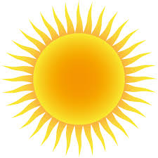

Preston Idaho

Weather Summary
Currently: Sunny
High: 76 °F
Wind Chill: °F
Humidity: 69%
Wind Speed: 5 mph
5 Day Forecast
| Wed | Thu | Fri | Sat | Sun |
|---|---|---|---|---|
|  89 °F | 87 °F | 78 °F | 75 °F | 72 °F |
Founders Day Fresco
by Janica Juarez
I was recently reflecting upon the founders day event held at Foundation Park each year. I have been taking the festival for granted and have not been properly engaging in perhaps the most popular community event of the year. In response, I contacted Ms. Sharon via email and expressed my desire to serve on the event committee. Well, you guessed it, the phone rings almost immediately and she promply asks me to be the event committee chair. Literally, good grief! My appreciation for the years of dedicated, generous servie of volunteers and sponsors has escalated beyond what I thought I could feel for such a thing and ...


The Weather Site
 30 N 1st E
30 N 1st E
Preston, ID 83263
999.999.9999
 theweathersite@tws.com
theweathersite@tws.com